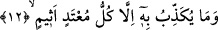
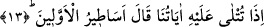

11. Ki onlar, cezâ gününü yalan sayarlar.
Bu, yalancıları kötüleyen ve kınayan bir cümledir. Âyetin bu ifâdesi tıpkı şu cümlede
olduğu gibidir: “Bunu habis ve fâsık olan filanca kişi yapmıştır.” Bu cümlede, “fâsıklık
ve habislik” filanca kişiyi kötüleyen birer sıfattır. Âyetimize geri dönecek olursak;
“cezâ gününün yalan sayılması”, yalancılara âid bir sıfattır. Onların cezâ gününü yalan
saydıkları ise yukarda geçen “zannetmezler mi” âyet-i kerimesinden anlaşılmaktadır.
İşaret ehli olan bazı âlimlerin ifâdesine göre; hakkı yalan sayan ve onun âyetlerini
yalanlayan kimseler, dünyaya yönelip haktan ve onun dini olan İslam’dan yüz çeviren
nefis erbabı kimselerdir. Herkes kendi dinine göre cezâlandırılır. Hiçbir dini olmayan
kimsenin cezâsı ise en kötü cezâdır, ona yazıklar olsun. Dini olan kimsenin mükâfatı ise
en güzel bir mükâfattır. Ayrıca ona kerîm olan Allah’ın vechini görme mükâfatı vardır.
Şu halde ey okuyucu, sen onu tasdikten geri durma.
12. Onu ancak hükümleri çiğneyen ve günaha dalan kimseler yalanlar.
Onu ancak sınırı aşan ve günaha düşkün olanlar yalanlar. Hududu ve sınırı aşandan
maksad Velid b. Muğire ve Nadr b. Hâris gibi düşünüp ibret alma sınırını aşan, kör bir
taklide sapan ve Allah’ın ilk yaratılışı nasıl yaptığını göre göre yeniden yaratmaya olan
kudretini eksik görenlerdir.
Âyette yer alan “esîm” kelimesini “günaha düşkün” şeklinde tercüme ettik. Bu
kelimenin asıl anlamı “fâni ve nâkıs olan şehvetlere dalmış” demektir. Böyle bir
kimseyi, şehveti, âhiretteki tam ve baki lezzetleri görmekten alıkoymuş ve onu bu ebedi
lezzetleri inkâra sevketmiştir.
“Sınırı aşmak” ifâdesi, kişinin kuvve-i nazariyeyi ihmal ettiğini göstermektedir. Bu
öyle bir kuvvedirki bunun mükemmelliği insana âlemi yaratanın birliğini; ilim, irade,
kudret vb. kemal sıfatlarıyla muttasıf olduğunu gösterir. “Günah” ise amelî kuvvetin
ihmaline işârettir. Oysa amelî kuvvetin kâmil oluşu, insana işlemesi için hayrı öğretip
gösterir.
13. Böyle birine âyetlerimiz okununca «Eskilerin masalları» derdi.
“Ona” bunları dile getiren “âyetlerimiz okunduğu zaman” aşırı cehâletinden ve asla
eğriliği bulunmayan haktan yüz çevirmiş olmasından dolayı “eskilerin masallarıdır.”
Bunlar eskilerin hikâyeleri, aslı ve esası olmayan haberleridir der. Fethu’r-Rahman’da
ifâde edildiğine göre; bunlar, eskiden yazılmış hikâyelerdir der.